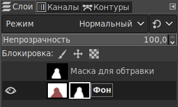
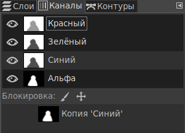
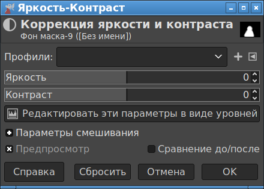

В этой статье предполагается, что подготовлены два слоя:
Слой черно-белой маски должен находиться над слоем фотографии. Темные места маски означают, что на результирующей картинке эти места будут не видны. Белые места отмечают места где изображение должно остаться. Как сделать такую маску, написано в статьях Создание сложного выделения волос в Gimp и Вырезаем волосы в Gimp. Обтравка волос.
Для применения маски надо выполнить следующие действия:
Так как маска черно-белая, то для создания канала выделения совершенно нет разницы, какой канал маски был использован как базовый. Количество красного, синего или зеленого цвета в каждом базовом цветовом канале черно-белой маски совершенно одинаковый.
Важно четко следовать данной инструкции, и лишний раз в другие места не нажимать, пока маска не будет применена, так как в противном случае в каналы может попасть изображение не из слоя маски, а из слоя фотографии, и результат будет неправильный, а заметить и понять что происходит будет очень сложно.
В итоге состояние слоев будет выглядеть так:

А состояние каналов будет такое:

Здесь видно, что на конечном этапе в каналах Красный/Зеленый/Синий отображаются данные из фотографии, а в канале Альфа находятся данные из маски. Это важно проверить, так как если состояние слоев и каналов другое, значит что-то было сделано не так.
Данная последовательность действий была проверена и работает, как минимум, в Gimp v. 2.10.22.
* * *
Далее можно подправить степень прозрачности маски. Для этого во вкладке "Слои" надо выбрать слой с фотографией, на который применена маска. Далее надо нажать "Цвет" - "Яркость/контраст". Когда на слое применена маска, то вызов данной регулировки будет воздействовать не на сам рисунок, а на маску. Это можно увидеть по техническому названию "Фон маска-9", которым обозначается объект, для которого применяется коррекция яркости и конраста.

Так же в правом верхнем углу этого окна видна маска, а не фотография.